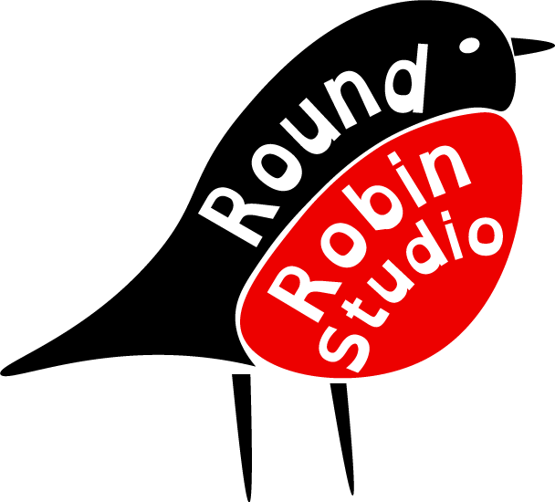

Undead Hills
A survival shooter game made in Unreal Engine 5, my latest project. Made in partnership with Adam Johnson. Watch a full walkthrough here:
I made: The player controller, UI, enemy AI, weapon systems, collectables, assisted level design.

Level 3 Game Development student at Belfast Met. Portfolio work in progress.
A survival shooter game made in Unreal Engine 5, my latest project. Made in partnership with Adam Johnson. Watch a full walkthrough here:
I made: The player controller, UI, enemy AI, weapon systems, collectables, assisted level design.
A Halloween themed 3D platformer made in Unreal Engine 5, my first project. Solo developed by me. Watch a full walkthrough here:
I made: Everything - Player controller, UI, level design, enemies/obstacles, cutscenes.
A Christmas themed 2D platformer made in Unreal Engine 5, my second project. Solo developed by me. Watch a full walkthrough here:
I made: Everything - Sprites, UI, level design, enemies/obstacles.